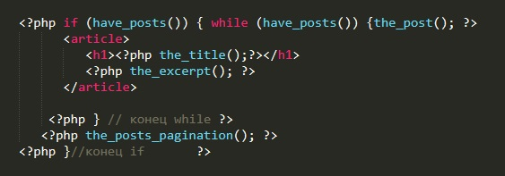
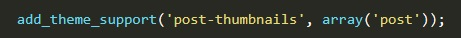
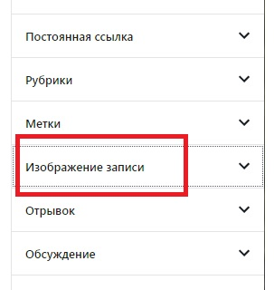
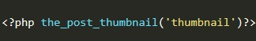
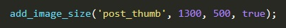
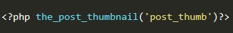
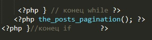
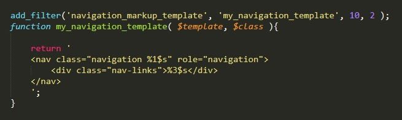
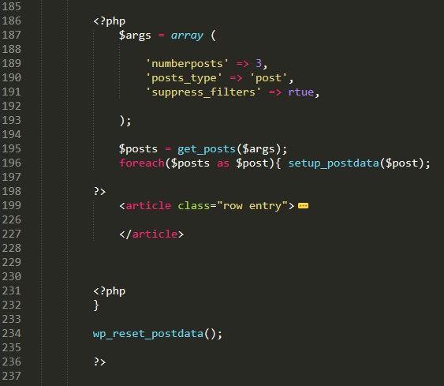

Посты обычно помещаются в тег <article>.
В WP предусмотрено так, что бы посты выводились только в отведенных для них рубриках (категориях). Для того что бы отобразить категорию, необходимо либо в навигации меню, либо в виджетах сделать ссылку на рубрику. Допустим у нас есть рубрика с именем "new", в виджетах или в меню мы создаем элемент с сылкой на эту рубрику и после того как мы пройдем по ссылке в адресной строке браузера будет такой адрес: http://localhost/category/new. Далее необходимо создать в папке с темой файл category-new.php. Внутри этого файла мы выводим посты с помощью цикла php о котором будет раасказано чуть ниже. Если у нас будет рубрика cats, то в этом случае имя файля для страницы этой рубрики мы будем называть category-cats.php. Иными словами в названии файла первое слово отображает тип страницы (в нашем случае это рубрика (категория)), далее дефис и имя нашей категории. Со страницами аналогично. Допустим есть страница About, для этой страницы надо создать файл который будет называться page-about.php.
Теперь рассмотрим как же нам выводить посты в нашей верстке.
Рассмотрим тело стандартного цикла вывода постов:
Логика кода: если есть посты текущей рубрики, то запускаем цикл while. В цикле, (пока есть посты) публикуем посты. Тут мы закрываем код php и выводим тег article в котором определяем разметку выводимого поста. У нас есть заголовок h1 в который выводим с помощью функции the_title() название поста. Далее идет превью поста который выводится функцией the_excerpt(). Здесь на примере представлена самая простейшая разметка, но в верстке может быить все намного интереснее, могу выводиться дата поста, автор и т.д. все это будет заключаться в свои блоки и этим блокам могут применяться стили, так наш пост будет принимать красивое оформление.
После разметки нам надо закрыть цикл hile, а так же оператор if, тоесть мы снова открываем код php вставляем в него закрытие цикла, далее закрываем код php. На следующей строке мы добавляем код php с функцией которая выводит пагинацию страниц. О пагинации поговорим позже. Затем снова открываем php код, помещаем закрытие оператора if и снова закрываем php код. Для чего мы так делаем? то закроем то тут же откроем код php, это нужно для того что бы симитировать выполнение кода php внутри кода. Такой вот каламбур!
Теперь рассмотрим основные функции php для работы с постами. Эти функции просто возвращают значения нашего поста (записи) которую мы создали в WP.
У функций the_category() и the_tags() входящим параметром может быть такое значение как $separator. в нем указывается как стоит разделять теги или рубрике в случаях наличия нескольких тегов или рубрик у записи. Тут можно почитать подробнее.
В админке WP, если мы зайдем в какую-нибудь запись, то справа, в настройках документа у нас не будет доступен виджет для работы с изображениями. для того что бы его добавить необходимо в файле functions.php найти функцию, которая которая вызывается во время ХУК-СОБЫТИЯ after_setup_theme (это функция которая выводит нашу навигацию (меню)). В теле этой функции нам надо добавить строчку:

Теперь в консоли WP, в редактировании записи появится справа такой виджет:
После того как загрузили картинку в WP, в верстке надо найти тот тег где указывается картинка записи и вместо тега img добавить код php:
Теперь картинка отобразится, но отобразится она урезанной. Как можно править размер картинки. Есть два способа:
Способ 1. В консоли WP Настройки - Медиафайлы - Размер миниатюры. Здесь указываем нужный нам размер
Способ 2. В функцию (в той что добавляли add_theme_support) вставляем такую стоку:

После этого вывод картинки будет выглядеть уже вот так:
Т.е. в первый раз мы использовали стандартную обрезку WP, а во втором случае мы создали свою собственную и применили ее.
Пагинация - это ссылочки внутри страницы. В случае если у нас 100 записей, на в начтройках стоит что выводить надо не более 10 постов на странице, то внизу появятся ссылочки на остальные записи.
В цикле вывода постов, между концом цикла while и концом оператора if необходимо вставить следующий код:
Теперь когда количество постов превысит количество разрешенных отображений записей, внизу появится Пагинация.
Но в этой пагинации будет выводится название "Навигация по записям", как его убрать?
Открываем наш файл functions.php и в функцию которая вызывается ХУК-Событием after_setup_theme добавляем следующий код:
Код этой функции фильтра можно скопировать отсюда
Этот способ выводит посты на произвольную страницу, которая не предназначена самим WP для постов.
В тело страницы помещаем следующий код:

В разметке так же используем те же функции что и в первом случае.
Про цункцию get_posts читаем ЗДЕСЬ